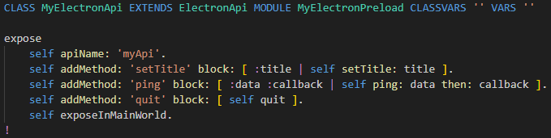
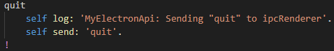

Open the file
src/Node/MyElectronApi.st in VSCode.
The top part looks like this:

Electron apps have a special 'preload' process / phase.
Preload scripts execute in a renderer (view) process before its web content begins loading.
They run in the renderer context, but also have access to Node.js APIs.
The ST API class is invoked by Electron through
/src/preload.ts .
Notice that
MyElectronApi inherits from
ElectronApi.
The API class is placed in module
MyElectronPreload ,
which
must be different from the modules used by the app and view later on.
Method
expose is the 'start' method, called in
preload.ts.
Its first line names the API
'myAPI' that our view uses to identify it.
The following lines add methods to the API for operations setting title, ping and quit.
Scroll down to the method
setTitle that looks like this:

This method sends the new title to the main app,
and it does not wait for a response.
Scroll down to the method
ping that looks like this:

This method requests data from the main app,
and calls a callback on the view with the response.
The example app will always respond with
'Pong' .
Scroll down to the method
quit that looks like this:

This method requests the main app to terminate.
It does not provide any arguments and does not wait for a response.